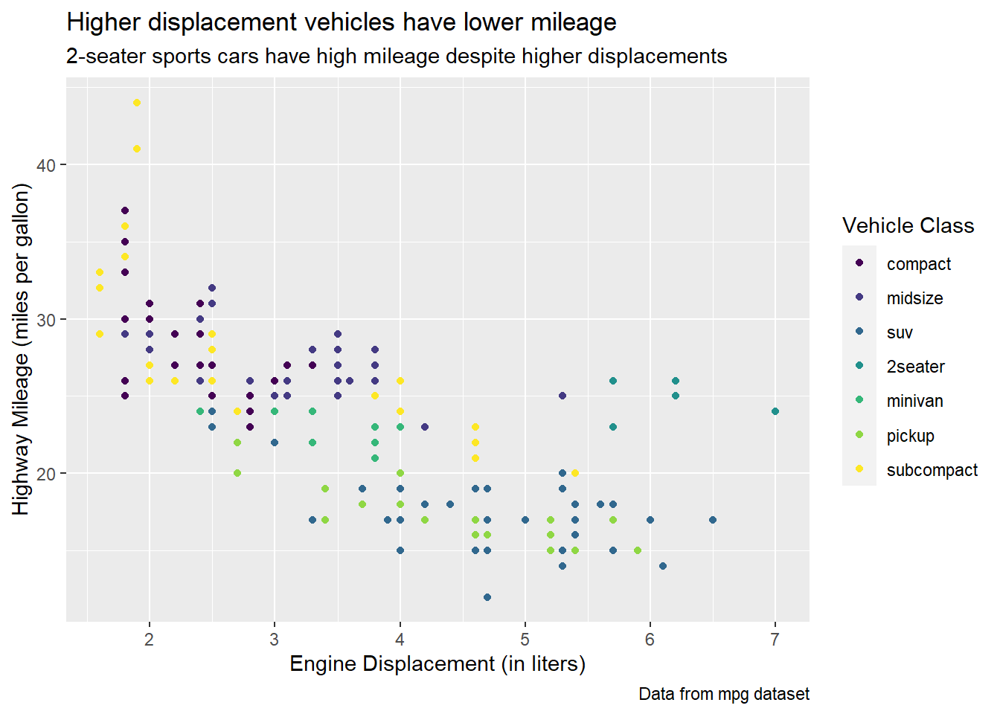
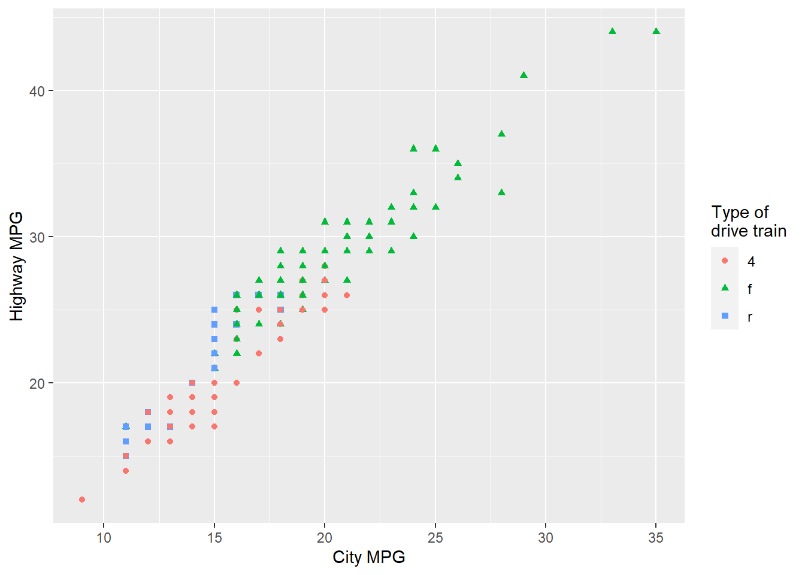
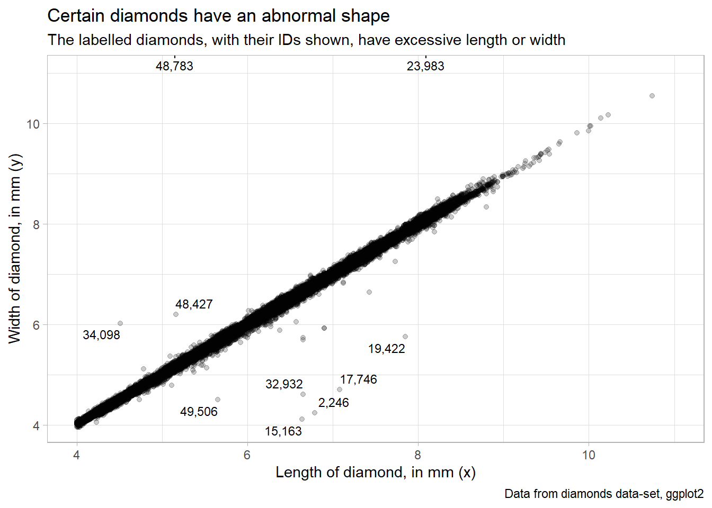
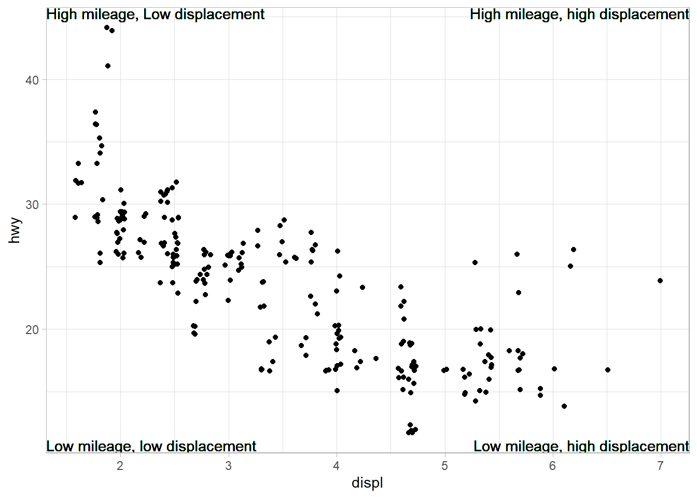
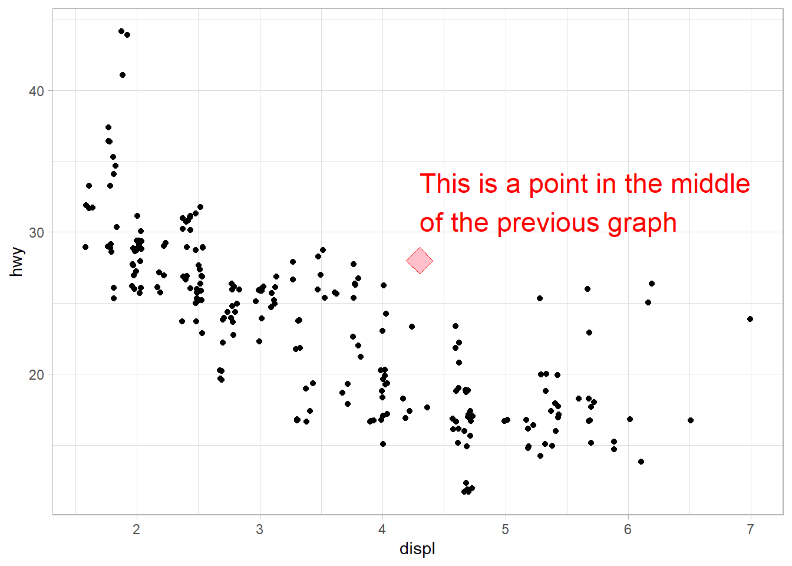
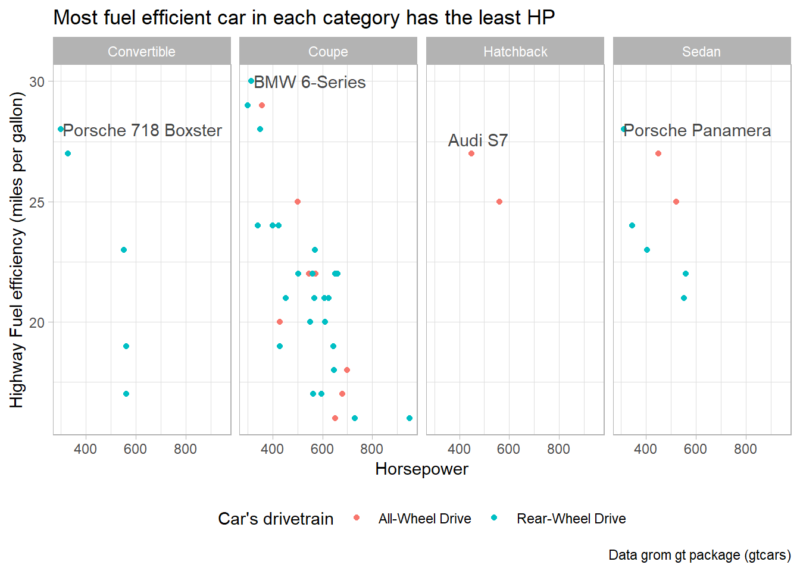
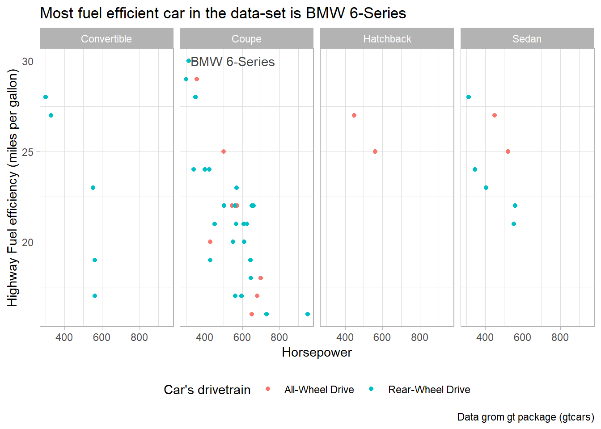
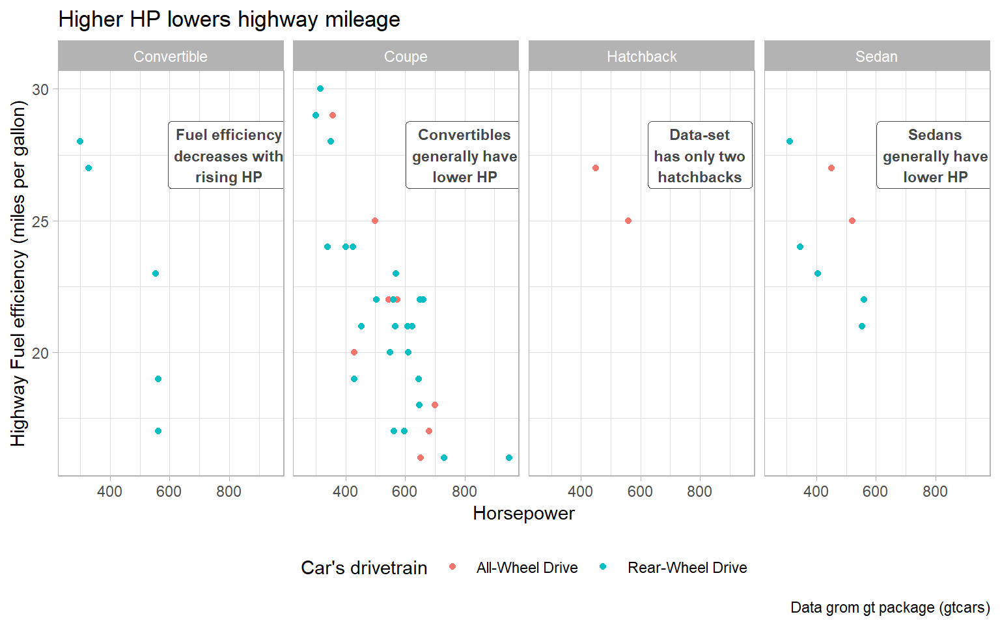
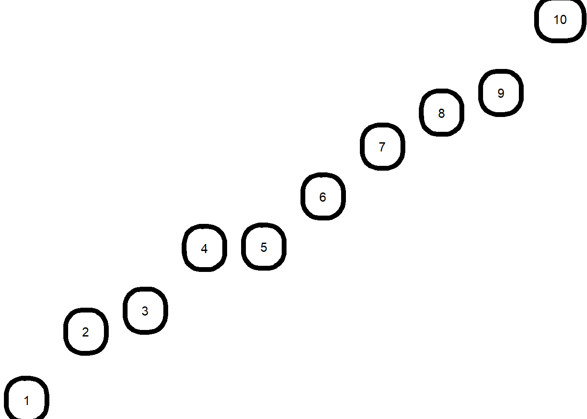
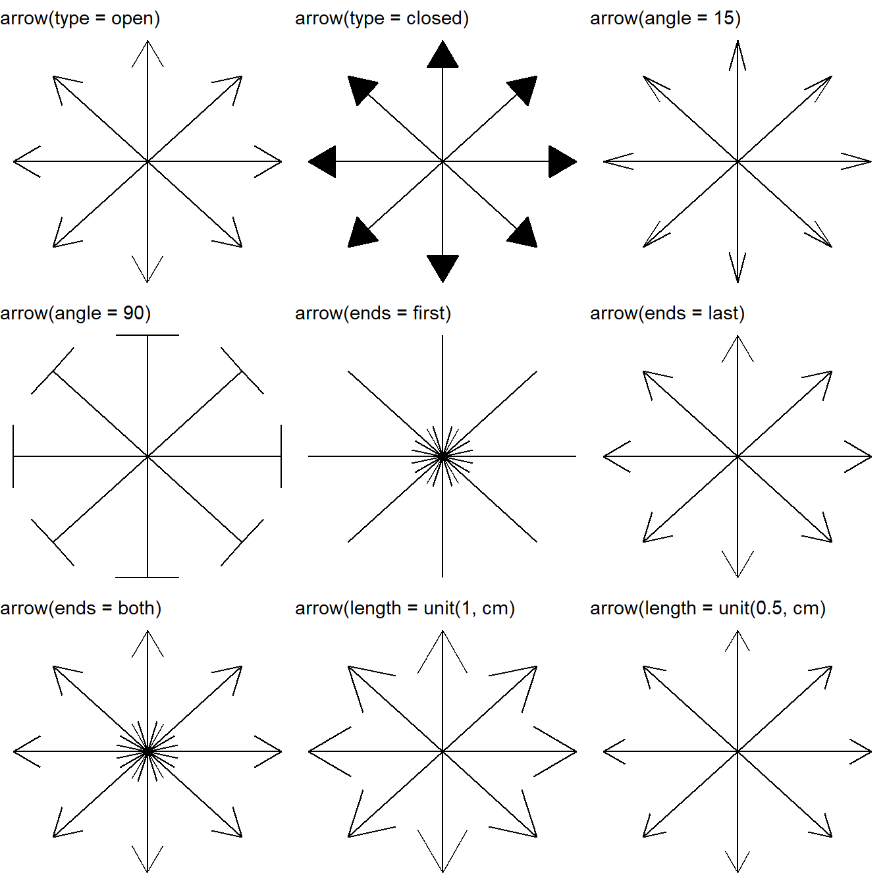

library(tidyverse) # the tidyverse
library(scales) # to adjust display of numbers
library(ggrepel) # to clearly position text labels
library(patchwork) # to display multiple plots
library(gt) # to display beautiful tables in QuartoChapter 12
Communication
Important lessons from R for Data Science 2nd Edition, Chapter 12: –
The purpose of a plot title is to summarize the main finding. Avoid titles that just describe what the plot is, e.g., “A scatterplot of engine displacement vs. fuel economy”.
12.2.1 Exercises
Question 1
Create one plot on the fuel economy data with customized title, subtitle, caption, x, y, and color labels.
The plot is shown below in Figure 1.
data(mpg)
mpg |>
ggplot(aes(x = displ,
y = hwy,
col = as_factor(class)
)
) +
geom_point() +
labs(title = "Higher displacement vehicles have lower mileage",
subtitle = "2-seater sports cars have high mileage despite higher displacements",
x = "Engine Displacement (in liters)",
y = "Highway Mileage (miles per gallon)",
caption = "Data from mpg dataset",
color = "Vehicle Class") +
theme(legend.position = "right") +
scale_color_viridis_d()
Question 2
Recreate the following plot using the fuel economy data. Note that both the colors and shapes of points vary by type of drive train.
mpg |>
ggplot(aes(x = cty,
y = hwy,
shape = drv,
col = drv)) +
geom_point() +
labs(x = "City MPG", y = "Highway MPG",
col = "Type of \ndrive train",
shape = "Type of \ndrive train")
Question 3
Take an exploratory graphic that you’ve created in the last month, and add informative titles to make it easier for others to understand.
I use a figure produced for Question 5 of Exercise 11.5.3.1 to demonstrate outliers in the diamonds dataset, based on a combination of x and y attributes of various diamonds. I use the ggrepel package(Slowikowski 2023) to label the outliers.
diamonds |>
mutate(res_lm = (lm(diamonds$y ~ diamonds$x)$residuals)) |>
filter(x >= 4) |>
mutate(res_lm = res_lm < -1 | res_lm > 1) |>
rowid_to_column() |>
mutate(rowid = ifelse(res_lm, rowid, NA)) |>
ggplot(aes(x = x,
y = y,
label = scales::comma(rowid))) +
geom_point(alpha = 0.2) +
coord_cartesian(xlim = c(4, 11), ylim = c(4, 11)) +
ggrepel::geom_text_repel(size = 3) +
labs(x = "Length of diamond, in mm (x)",
y = "Width of diamond, in mm (y)",
title = "Certain diamonds have an abnormal shape",
subtitle = "The labelled diamonds, with their IDs shown, have excessive length or width",
caption = "Data from diamonds data-set, ggplot2") +
theme_light()
12.3.1 Exercises
Question 1
Use geom_text() with infinite positions to place text at the four corners of the plot.
The Figure 3 show the plot produced. The important thing to understand is the use of arguments hjust and vjust to the function geom_text() : –
hjust(Horizontal Justification):The
hjustargument controls the horizontal alignment or justification of the text relative to its specified x-coordinate.It takes values between 0 and 1, where 0 means left-aligned, 1 means right-aligned, and 0.5 means centered.
Values less than 0 or greater than 1 can be used to align the text outside the range of the plot area.
Negative values shift the text label to the left, and values greater than 1 shift it to the right.
vjust(Vertical Justification):The
vjustargument controls the vertical alignment or justification of the text relative to its specified y-coordinate.Like
hjust, it takes values between 0 and 1, where 0 means bottom-aligned, 1 means top-aligned, and 0.5 means centered.Values less than 0 or greater than 1 can be used to align the text outside the range of the plot area.
Negative values shift the text label downward, and values greater than 1 shift it upward.
g = mpg |>
ggplot(aes(x = displ,
y = hwy)) +
geom_point(position = position_jitter(seed = 1)) +
theme_light()
g +
# Add text labels at the four corners using infinite positions
geom_text(aes(x = Inf, y = Inf,
label = "High mileage, high displacement"),
hjust = 1, vjust = 1) +
geom_text(aes(x = -Inf, y = -Inf,
label = "Low mileage, low displacement"),
hjust = 0, vjust = -0.2) +
geom_text(aes(x = Inf, y = -Inf,
label = "Low mileage, high displacement"),
hjust = 1, vjust = -0.2) +
geom_text(aes(x = -Inf, y = Inf,
label = "High mileage, Low displacement"),
hjust = 0, vjust = 1)
Question 2
Use annotate() to add a point geom in the middle of your last plot without having to create a tibble. Customize the shape, size, or color of the point.
# Compute middle of x and y axis
x_mid = (min(mpg$displ) + max(mpg$displ))/2
y_mid = (min(mpg$hwy) + max(mpg$hwy))/2
lbl_grph = str_wrap("This is a point in the middle of the previous graph",
width = 30)
g +
annotate(
geom = "point",
x = x_mid,
y = y_mid,
shape = 23,
size = 6,
color = "red",
fill = "pink"
) +
annotate(
geom = "text",
label = lbl_grph,
x = x_mid,
y = y_mid,
color = "red",
hjust = 0,
vjust = -0.5,
size = 6
)
Question 3
How do labels with geom_text() interact with faceting? How can you add a label to a single facet? How can you put a different label in each facet? (Hint: Think about the dataset that is being passed to geom_text().)
In ggplot2, the geom_text() function is used to add text labels to a plot. Labels added using geom_text() can interact with faceting. Faceting involves creating multiple plots based on different subsets of the data. The following points clarify the interaction methods: –
Interaction between geom_text() labels and faceting: When we use faceting in ggplot2 (with functions like facet_wrap() or facet_grid()), the labels created by geom_text() are typically placed in each facet based on the data corresponding to that specific facet. This means that the labels are positioned within each facet’s coordinate system. Figure 4 is an example using gtcars dataset from gt package to display the name (geom_text) of most fuel efficient car on higway within each body style: –
Code
data("gtcars")
gtcars |>
# Remove NAs, else they will be treated as maximum
drop_na() |>
# Cosmetic improvements for labelling in plot
mutate(bdy_style = str_to_title(bdy_style)) |>
mutate(drivetrain = case_when(
drivetrain == "awd" ~ "All-Wheel Drive",
drivetrain == "rwd" ~ "Rear-Wheel Drive"
)) |>
# Determine car with maximum Highway mileage in each group
group_by(bdy_style) |>
mutate(
high_cat = ifelse(mpg_h == max(mpg_h),
yes = paste0(mfr, " ", model),
no = NA)
) |>
ggplot(aes(x = hp,
y = mpg_h,
color = drivetrain,
label = high_cat)) +
geom_point(size = 1.5) +
geom_text_repel(color = "#454647") +
# To makr mpg_h comparable visually across facets,
# we select layout of 4 columns
facet_wrap(~bdy_style, ncol = 4) +
theme_light() +
theme(legend.position = "bottom") +
labs(x = "Horsepower",
y = "Highway Fuel efficiency (miles per gallon)",
color = "Car's drivetrain",
title = "Most fuel efficient car in each category has the least HP",
caption = "Data grom gt package (gtcars)")
Adding a label to a single facet: If you want to add a label to only one specific facet, you can do so by adding a new data frame containing the label information for that facet; or, by creating a new column with the value stored only for the observation to be labelled, and rest as NAs. Figure 5 is an example using gtcars dataset from gt package to display the name (geom_text) of most fuel efficient car on the highway in the entire data set: –
Code
gtcars |>
# Remove NAs, else they will be treated as maximum
drop_na() |>
# Cosmetic improvements for labelling in plot
mutate(bdy_style = str_to_title(bdy_style)) |>
mutate(drivetrain = case_when(
drivetrain == "awd" ~ "All-Wheel Drive",
drivetrain == "rwd" ~ "Rear-Wheel Drive"
)) |>
# Determine car with maximum Highway mileage (so, no need to Group)
# group_by(bdy_style) |>
mutate(
high_cat = ifelse(mpg_h == max(mpg_h),
yes = paste0(mfr, " ", model),
no = NA)
) |>
ggplot(aes(x = hp,
y = mpg_h,
color = drivetrain,
label = high_cat)) +
geom_point(size = 1.5) +
geom_text_repel(color = "#454647") +
# To makr mpg_h comparable visually across facets,
# we select layout of 4 columns
facet_wrap(~bdy_style, ncol = 4) +
theme_light() +
theme(legend.position = "bottom") +
labs(x = "Horsepower",
y = "Highway Fuel efficiency (miles per gallon)",
color = "Car's drivetrain",
title = "Most fuel efficient car in the data-set is BMW 6-Series",
caption = "Data grom gt package (gtcars)")
Putting a different label in each facet: The easiest way to annotate for each facet separately is to create a dataframe with a row for each facet. For example, in Figure 6, I create the same plot as above, with an annotation in each facet of the plot, highlighting my main message for that body style. I create these annotations using geom_label(). I could do the same with geom_text() as well.
Code
annt_con = "Convertibles generally have lower HP"
annt_cup = "Fuel efficiency decreases with rising HP"
annt_sed = "Sedans generally have lower HP"
annt_hbk = "Data-set has only two hatchbacks"
annt_df = tibble(
bdy_style = as_vector(distinct(gtcars, bdy_style)),
annt = str_wrap(c(annt_con, annt_cup, annt_sed, annt_hbk),
width = 15),
x_annt = 800,
y_annt = 27.5
) |>
mutate(bdy_style = str_to_title(bdy_style))
gtcars |>
# Cosmetic improvements for labelling in plot
mutate(bdy_style = str_to_title(bdy_style)) |>
mutate(drivetrain = case_when(
drivetrain == "awd" ~ "All-Wheel Drive",
drivetrain == "rwd" ~ "Rear-Wheel Drive"
)) |>
ggplot(aes(x = hp,
y = mpg_h,
color = drivetrain)) +
geom_point(size = 1.5) +
# To make mpg_h comparable visually across facets,
# we select layout of 4 columns
facet_wrap(~bdy_style, ncol = 4) +
geom_label(
data = annt_df,
mapping = aes(x = x_annt,
y = y_annt,
label = annt),
color = "#454647",
fontface = "bold",
label.size = 0.1,
size = 3
) +
theme_light() +
theme(legend.position = "bottom") +
labs(x = "Horsepower",
y = "Highway Fuel efficiency (miles per gallon)",
color = "Car's drivetrain",
title = "Higher HP lowers highway mileage",
caption = "Data grom gt package (gtcars)")
Question 4
What arguments to geom_label() control the appearance of the background box?
In ggplot2, the geom_label() function is used to add labeled annotations to a plot, as shown above in Figure 6. To control the appearance of the background box of these labels, we can use the following arguments:
label.padding: This argument controls the padding around the label text within the background box, with a default value of 0.25.label.size: This argument defines the size of the label border, in mm.label.r: This argument sets the radius of the rounded corners of the background box, with a default value of 0.15.
An example of how we can use these arguments in the geom_label() function is shown below in :
tibble(x = 1:10,
y = 2*x + rnorm(10)) |>
ggplot(aes(x = x, y = y)) +
geom_label(aes(label = x),
label.padding = unit(1, "lines"), # Adjust padding
label.size = 2, # Set text size
label.r = unit(1, "lines")) + # Set corner radius
theme_void()
Question 5
What are the four arguments to arrow()? How do they work? Create a series of plots that demonstrate the most important options.
In ggplot2 and R, the arrow() function is used to customize the appearance of arrowheads in line segments. As the results show in Figure 8, the arrow() function has four main arguments that we can use to control the arrowheads:
type: This argument specifies the type of arrowhead. There are three main types:"closed": A closed arrowhead with a triangular shape."open": An open arrowhead with a triangular shape.
length: This argument controls the length of the arrowhead. We can specify it using a numeric value or aunit()object, which allows you to define the length in various units such as"inches","cm", etc.ends: This argument determines which end of the line segment the arrowhead should appear on. It can take two values:"last": Arrowhead is placed at the end of the segment (default behavior)."first": Arrowhead is placed at the start of the segment."both": Arrowhead appears at both the start and end of the segment.
angle: This argument controls the angle of the arrow head in degrees (smaller numbers produce narrower, pointier arrows). It describes the width of the arrow head.
nos = 8 # Number of spokes to create
angle = seq(0, 7/4 * pi, length.out = nos) # Angles for 8 directions
arrow_length = 0.8 # Length of line segment
g = tibble(
x_start = rep(0, nos), # Common starting point
y_start = rep(0, nos),
x_end = cos(angle) * arrow_length, # Calculate end points based on angles
y_end = sin(angle) * arrow_length
) |>
ggplot(aes(x = x_start,
y = y_start,
xend = x_end,
yend = y_end)) +
theme_void()
gridExtra::grid.arrange(
g + geom_segment(arrow = arrow(type = "open")) +
labs(subtitle = "arrow(type = open)"),
g + geom_segment(arrow = arrow(type = "closed")) +
labs(subtitle = "arrow(type = closed)"),
g + geom_segment(arrow = arrow(angle = 15)) +
labs(subtitle = "arrow(angle = 15)"),
g + geom_segment(arrow = arrow(angle = 90)) +
labs(subtitle = "arrow(angle = 90)"),
g + geom_segment(arrow = arrow(ends = "first")) +
labs(subtitle = "arrow(ends = first)"),
g + geom_segment(arrow = arrow(ends = "last")) +
labs(subtitle = "arrow(ends = last)"),
g + geom_segment(arrow = arrow(ends = "both")) +
labs(subtitle = "arrow(ends = both)"),
g + geom_segment(arrow = arrow(length = unit(1, "cm"))) +
labs(subtitle = "arrow(length = unit(1, cm)"),
g + geom_segment(arrow = arrow(length = unit(0.5, "cm"))) +
labs(subtitle = "arrow(length = unit(0.5, cm)"),
ncol = 3
)
References
Slowikowski, Kamil. 2023. “Ggrepel: Automatically Position Non-Overlapping Text Labels with ’Ggplot2’.” https://CRAN.R-project.org/package=ggrepel.